All the compound data objects we have used so far were constructed
ultimately from numbers. In this section we extend the representational
capability of our language by introducing the ability to work with
strings of characters
as data.
If we can form compound data using strings, we can have lists such as
Note that in order to distinguish strings from program variables, we surround them with
double quotation marks. For example, the JavaScript expression z
denotes the value of the program variable z, whereas the
JavaScript expression "z" denotes a string that consists of
one single character, namely the last letter in the English alphabet in lower case.
JavaScript follows the
common practice in natural languages, where quotation marks
indicate that a word or a sentence is to be treated literally as a
string of characters. For instance, the first letter of “John” is
clearly “J.” If we tell somebody “say your name aloud,” we expect
to hear that person’s name. However, if we tell somebody “say ‘your name’ aloud,” we expect to hear the words “your name.” Note that
we are forced to nest quotation marks to describe what somebody else
might say.
Via quotation marks, we can distinguish between strings and variables:
var a = 1;
var b = 2;
list(a,b)
list("a","b")
list("a",b)
In order to test if two strings are equal, the operator
===
can be applied to strings and returns
true if the two strings
being compared have exactly the same characters in the exactly the same order.
6 Using
===,
we can implement a useful
function
called
memq. This takes two
arguments, a string and a list. If the string is not contained in the
list (i.e., is not
=== to any item in the list),
then
memq returns false. Otherwise, it returns the sublist of
the list beginning with the first occurrence of the string:
function memq(item,x) {
if (is_empty_list(x))
return false;
else if (item === head(x))
return x;
else
return memq(item,tail(x));
}
For example, the value of
memq("apple",["pear",["banana",["prune",[]]]])
is false, whereas the value of
memq("apple",["x",[["apple",["sauce",[]]],["y",["apple",["pear",[]]]]]])
is
["apple",["pear",[]]].
Exercise 2.57.
What would the interpreter print in response to evaluating each of the
following expressions?
list("a","b","c")
list(list("george"))
memq("red",[["red",["shoes",[]]],[["blue",["socks",[]]],[]]])
memq("red",["red",["shoes",["blue",["socks",[]]]]])
Exercise 2.58.
We would like to define a function
is_equal that checks whether two lists contain equal elements
arranged in the same order. For example,
is_equal(["this",["is",["a",["list",[]]]]],["this",["is",["a",["list",[]]]]])
is true, but
is_equal(["this",["is",["a",["list",[]]]]],["this",[["is",["a",[]]],["list",[]]]])
is false. To be more precise, we can define
is_equal
recursively in terms of the basic
=== equality of strings by
saying that
a and
b
are equal with respect to
is_equal if they are both
strings and the strings are equal with respect to
===,
or if they are both lists such
that
head(a) is equal with respect to
is_equal to
head(b) and
tail(a) is equal with respect to
is_equal to
tail(b).
Using this idea, implement
is_equal as a function.
7
As an illustration of symbol manipulation and a further illustration
of data abstraction, consider the design of a
function
that performs
symbolic differentiation of algebraic expressions. We would like the
function
to take as arguments an algebraic expression and a variable
and to return the derivative of the expression with respect to the
variable. For example, if the arguments to the
function
are 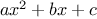 and , the
function
should return 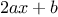. Symbolic
differentiation is of special historical significance in Lisp. It was
one of the motivating examples behind the development of a computer
language for symbol manipulation. Furthermore, it marked the
beginning of the line of research that led to the development of
powerful systems for symbolic mathematical work, which are currently
being used by a growing number of applied mathematicians and
physicists.
In developing the symbolic-differentiation program, we will follow the
same strategy of data abstraction that we followed in developing the
rational-number system of section
2.1.1. That is, we will first
define a differentiation algorithm that operates on abstract
objects such as “sums,” “products,” and “variables” without
worrying about how these are to be represented. Only afterward will
we address the representation problem.
The differentiation program with abstract data
In order to keep things simple, we will consider a very simple
symbolic-differentiation program that handles expressions that are
built up using only the operations of addition and multiplication with
two arguments. Differentiation of any such expression can be carried
out by applying the following reduction rules:
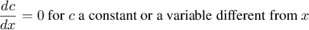
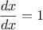
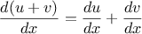
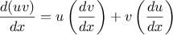
Observe that the latter two rules are recursive in nature. That is,
to obtain the derivative of a sum we first find the derivatives of the
terms and add them. Each of the terms may in turn be an
expression that needs to be decomposed. Decomposing into smaller and
smaller pieces will eventually produce pieces that are either
constants or variables, whose derivatives will be either
or
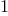.
To embody these rules in a
function
we indulge in a little
wishful
thinking, as we did in designing the rational-number implementation.
If we had a means for representing algebraic expressions, we should be
able to tell whether an expression is a sum, a product, a constant, or
a variable. We should be able to extract the parts of an expression.
For a sum, for example we want to be able to extract the addend
(first term) and the augend (second term). We should also be able to
construct expressions from parts. Let us assume that we already have
functions
to implement the following selectors, constructors, and
predicates:
|
is_variable(e)
|
Is e a variable?
|
|
is_same_variable(v1,v2)
|
Are v1 and v2 the same variable?
|
|
is_sum(e)
|
Is e a sum?
|
|
addend(e)
|
Addend of the sum e.
|
|
augend(e)
|
Augend of the sum e.
|
|
make_sum(a1,a2)
|
Construct the sum of a1 and a2.
|
|
is_product(e)
|
Is e a product?
|
|
multiplier(e)
|
Multiplier of the product e.
|
|
multiplicand(e)
|
Multiplicand of the product e.
|
|
make_product(m1,m2)
|
Construct the product of m1 and m2.
|
Using these, and the primitive predicate
is_number,
which identifies numbers, we can express the differentiation rules as the following
function:
function deriv(exp,variable) {
if (is_number(exp))
return 0;
else if (is_variable(exp))
return (is_same_variable(exp,variable)) ? 1 : 0;
else if (is_sum(exp))
return make_sum(deriv(addend(exp),variable),
deriv(augend(exp),variable));
else if (is_product(exp))
return make_sum(make_product(multiplier(exp),
deriv(multiplicand(exp),variable)),
make_product(deriv(multiplier(exp),variable),
multiplicand(exp)));
else
return error("unknown expression type -- deriv",exp);
}
This deriv
function
incorporates the complete differentiation algorithm.
Since it is expressed in terms of abstract data, it will work no
matter how we choose to represent algebraic expressions, as long as we
design a proper set of selectors and constructors. This is the issue
we must address next.
Representing algebraic expressions
We can imagine many ways to use list structure to represent algebraic
expressions. For example, we could use lists of symbols that mirror
the usual algebraic notation, representing
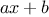 as
list( "a","*","x","+","b").
However, it will be more convenient, if we reflect the mathematical structure of the expression in the JavaScript
value representing it; that is, to represent
as
list("+",list("*","a","x"),"b").
Then our data representation for the differentiation problem is as
follows:
- The variables are strings.
They are identified by the primitive predicate
is_string:
function is_variable(x) {
return is_string(x);
}
- Two variables are the same if the
strings representing them are equal:
function is_same_variable(v1,v2) {
return is_variable(v1) && is_variable(v2) && v1 === v2;
}
- Sums and products are constructed as lists:
function make_sum(a1,a2) {
return list("+",a1,a2);
}
function make_product(m1,m2) {
return list("*",m1,m2);
}
- A sum is a list whose first element is the
string "+":
function is_sum(x) {
return is_pair(x) && head(x) === "+";
}
- The addend is the second item of the sum list:
function addend(s) {
return head(tail(s));
}
- The augend is the third item of the sum list:
function augend(s) {
return head(tail(tail(s)));
}
- A product is a list whose first element is the
string "*":
function is_product(x) {
return is_pair(x) && head(x) === "*";
}
- The multiplier is the second item of the product list:
function multiplier(s) {
return head(tail(s));
}
- The multiplicand is the third item of the product list:
function multiplicand(s) {
return head(tail(tail(s)));
}
Thus, we need only combine these with the algorithm as embodied by
deriv in order to have a working symbolic-differentiation
program. Let us look at some examples of its behavior:
deriv(list("+","x",3),"x")
deriv(list("*","x","y"),"x")
deriv(list("*",list("*","x","y"),list("+","x",3)),"x")
The program produces answers that are correct; however, they are
unsimplified. It is true that
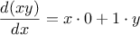
but we would like the program to know that
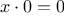,
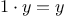, and
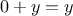. The answer for the second example should have been
simply
y. As the third example shows, this becomes a serious
issue when the expressions are complex.
Our difficulty is much like the one we encountered with the
rational-number implementation: we haven’t reduced answers to simplest
form. To accomplish the rational-number reduction, we needed to
change only the constructors and the selectors of the implementation.
We can adopt a similar strategy here. We won’t change
deriv at
all. Instead, we will change
make_sum so that if both summands
are numbers,
make_sum will add them and return their sum. Also,
if one of the summands is 0, then
make_sum will return the other
summand.
function make_sum(a1,a2) {
if (is_number_equal(a1,0))
return a2;
else if (is_number_equal(a2,0))
return a1;
else if (is_number(a1) && is_number(a2))
return a1 + a2;
else
return list("+",a1,a2);
}
This uses the
function
is_number_equal, which checks whether an
expression is equal to a given number:
function is_number_equal(exp,num) {
return is_number(exp) && exp === num;
}
Similarly, we will change
make_product to build in the rules that 0
times anything is 0 and 1 times anything is the thing itself:
function make_product(m1,m2) {
if (is_number_equal(m1,0) || is_number_equal(m2,0))
return 0;
else if (is_number_equal(m1,1))
return m2;
else if (is_number_equal(m2,1))
return m1;
else if (is_number(m1) && is_number(m2))
return m1 * m2;
else
return list("*",m1,m2);
}
Try out how this version works on our three examples:
deriv(list("+","x",3),"x")
deriv(list("*","x","y"),"x")
deriv(list("*",list("*","x","y"),list("+","x",3)),"x")
Although this is quite an improvement, the third example shows that
there is still a long way to go before we get a program that puts
expressions into a form that we might agree is “simplest.” The
problem of algebraic simplification is complex because, among other
reasons, a form that may be simplest for one purpose may not be for
another.
Exercise 2.59.
Show how to extend the basic differentiator to handle more kinds of
expressions. For instance, implement the differentiation rule
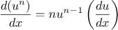
by adding a new clause to the
deriv program
and defining
appropriate
functions
is_exponentiation,
base,
exponent,
and
make_exponentiation. (You may use the string
"**" to denote
exponentiation.)
Build in the rules that anything raised to the power 0 is 1 and
anything raised to the power 1 is the thing itself.
Exercise 2.60.
Extend the differentiation program to handle sums and products of
arbitrary numbers of (two or more) terms.
Then the last example above could be expressed as
deriv(list("*","x","y",list("+","x",3)),"x")
Try to do this by changing only the
representation for sums and products, without changing the
deriv
function
at all. For example, the
addend of a sum would
be the first term, and the
augend would be the sum of the rest
of the terms.
Exercise 2.61.
Suppose we want to modify the differentiation program so that it works
with ordinary mathematical notation, in which
"+" and
"*" are
infix rather than prefix operators. Since the differentiation program
is defined in terms of abstract data, we can modify it to work with
different representations of expressions solely by changing the
predicates, selectors, and constructors that define the representation
of the algebraic expressions on which the differentiator is to
operate.
-
Show how to do this in order to differentiate algebraic
expressions presented in infix form, such as list("x","+",list(3,"*",list("x","+",list("y","+",2)))).
To simplify the task, assume that "+" and "*" always
take two arguments and that expressions are fully parenthesized.
-
The problem becomes substantially harder if we
allow
provide for avoiding unnecessary lists by assuming that multiplication is done before addition, as in
list("x","+","3","*",list("x","+","y","+",2)).
Can you design appropriate predicates, selectors, and
constructors for this notation such that our derivative
program still works?
In the previous examples we built representations for two kinds of
compound data objects: rational numbers and algebraic expressions. In
one of these examples we had the choice of simplifying (reducing) the
expressions at either construction time or selection time, but other
than that the choice of a representation for these structures in terms
of lists was straightforward. When we turn to the representation of
sets, the choice of a representation is not so obvious. Indeed, there
are a number of possible representations, and they differ
significantly from one another in several ways.
Informally, a set is simply a collection of distinct objects. To give
a more precise definition we can employ the method of data
abstraction. That is, we define “set” by specifying the operations
that are to be used on sets. These are
union_set,
intersection_set,
is_element_of_set, and
adjoin_set.
The function
is_element_of_set is a predicate that determines whether a given
element is a member of a set.
The function
adjoin_set takes an object and a
set as arguments and returns a set that contains the elements of the
original set and also the adjoined element.
The function
union_set computes
the union of two sets, which is the set containing each element that
appears in either argument.
The function
intersection_set computes the
intersection of two sets, which is the set containing only elements
that appear in both arguments. From the viewpoint of data abstraction, we
are free to design any representation that implements these operations
in a way consistent with the interpretations given above.
8
Sets as unordered lists
One way to represent a set is as a list of its elements in which no
element appears more than once. The empty set is represented by the
empty list. In this representation,
is_element_of_set is similar
to the
function
memq of section
2.3.1. It uses
is_equal
instead of
=== so that the set elements need not be primitive values:
function is_element_of_set(x,set) {
if (is_empty_list(set))
return false;
else if (is_equal(x,head(set)))
return true;
else
return is_element_of_set(x,tail(set));
}
Using this, we can write
adjoin_set. If the object to be adjoined
is already in the set, we just return the set. Otherwise, we use
pair to add the object to the list that represents the set:
function adjoin_set(x,set) {
if (is_element_of_set(x,set))
return set;
else return pair(x,set);
}
For
intersection_set we can use a recursive strategy. If we
know how to form the intersection of
set2 and the
tail
of
set1, we only need to decide whether to include
the
head of
set1 in this. But this depends on whether
head(set1) is also in
set2. Here is the resulting
function:
function intersection_set(set1,set2) {
if (is_empty_list(set1) || is_empty_list(set2))
return [];
else if (is_element_of_set(head(set1),set2))
return pair(head(set1),
intersection_set(tail(set1),set2));
else
return intersection_set(tail(set1),set2);
}
In designing a representation, one of the issues we should be
concerned with is efficiency. Consider the number of steps required by our set
operations. Since they all use is_element_of_set, the speed
of this operation has a major impact on the efficiency of the set
implementation as a whole. Now, in order to check whether an object
is a member of a set, is_element_of_set may have to scan the
entire set. (In the worst case, the object turns out not to be in the
set.) Hence, if the set has 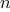 elements, is_element_of_set
might take up to steps. Thus, the number of steps
required grows as 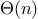.
The number of steps required by adjoin-set, which uses this operation,
also grows as . For intersection_set, which does an is_element_of_set check for each element of set1, the number of steps
required grows as the product of the sizes of the sets involved, or
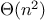 for two sets of size . The same will be true of union_set.
Exercise 2.62.
Implement the
union_set operation for the unordered-list
representation of sets.
Exercise 2.63.
We specified that a set would be represented as a list with no
duplicates. Now suppose we allow duplicates. For instance,
the set
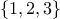 could be represented as the list
[2,[3,[2,[1,[3,[2,[2,[]]]]]]]]. Design
functions
is_element_of_set,
adjoin_set,
union_set, and
intersection_set that operate on this
representation. How does the efficiency of each compare with the
corresponding
function
for the non-duplicate representation? Are
there applications for which you would use this representation in
preference to the non-duplicate one?
Sets as ordered lists
One way to speed up our set operations is to change the representation
so that the set elements are listed in increasing order. To do this,
we need some way to compare two objects so that we can say which is
bigger. For example, we could compare symbols lexicographically, or
we could agree on some method for assigning a unique number to an
object and then compare the elements by comparing the corresponding
numbers. To keep our discussion simple, we will consider only the
case where the set elements are numbers, so that we can compare
elements using > and <. We will represent a set of
numbers by listing its elements in increasing order. Whereas our
first representation above allowed us to represent the set
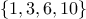 by listing the elements in any order, our new
representation allows only the list [1,[3,[6,[10,[]]]]].
One advantage of ordering shows up in
is_element_of_set: In
checking for the presence of an item, we no longer have to scan the
entire set. If we reach a set element that is larger than the item we
are looking for, then we know that the item is not in the set:
function is_element_of_set(x,set) {
if (is_empty_list(set))
return false;
else if (x === head(set))
return true;
else if (x < head(set))
return false;
else
return is_element_of_set(x,tail(set));
}
How many steps does this save? In the worst case, the item we are
looking for may be the largest one in the set, so the number of steps
is the same as for the unordered representation. On the other hand,
if we search for items of many different sizes we can expect that
sometimes we will be able to stop searching at a point near the
beginning of the list and that other times we will still need to
examine most of the list. On the average we should expect to have to
examine about half of the items in the set. Thus, the average
number of steps required will be about

.
This is still
growth, but
it does save us, on the average, a factor of 2 in number of steps over the
previous implementation.
We obtain a more impressive speedup with
intersection_set. In
the unordered representation this operation required
steps, because we performed a complete scan of
set2 for
each element of
set1. But with the ordered representation, we
can use a more clever method. Begin by comparing the initial
elements,
x1 and
x2, of the two sets. If
x1
equals
x2, then that gives an element of the intersection, and
the rest of the intersection is the intersection of the
tails of
the two sets. Suppose, however, that
x1 is less than
x2.
Since
x2 is the smallest element in
set2, we can
immediately conclude that
x1 cannot appear anywhere in
set2 and hence is not in the intersection. Hence, the intersection
is equal to the intersection of
set2 with the
tail of
set1. Similarly, if
x2 is less than
x1, then the
intersection is given by the intersection of
set1 with the
tail of
set2. Here is the
function:
function intersection_set(set1,set2) {
if (is_empty_list(set1) || is_empty_list(set2))
return [];
else {
var x1 = head(set1);
var x2 = head(set2);
if (x1 === x2)
return pair(x1,intersection_set(tail(set1),
tail(set2)));
else if (x1 < x2)
return intersection_set(tail(set1),
set2);
else if (x2 < x1)
return intersection_set(set1,
tail(set2));
}
}
To estimate the number of steps required by this process, observe that at each
step we reduce the intersection problem to computing intersections of
smaller sets—removing the first element from set1 or set2 or both. Thus, the number of steps required is at most the sum
of the sizes of set1 and set2, rather than the product of
the sizes as with the unordered representation. This is growth
rather than —a considerable speedup, even for sets of
moderate size.
Exercise 2.64.
Give an implementation of
adjoin_set using the ordered
representation. By analogy with
is_element_of_set show how to
take advantage of the ordering to produce a
function
that requires on
the average about half as many steps as with the unordered
representation.
Exercise 2.65.
Give a
implementation of
union_set for sets
represented as ordered lists.
Sets as binary trees
We can do better than the ordered-list representation by arranging the
set elements in the form of a tree. Each node of the tree holds one
element of the set, called the “entry” at that node, and a link to
each of two other (possibly empty) nodes. The “left” link points to
elements smaller than the one at the node, and the “right” link to
elements greater than the one at the node.
Figure
2.16 shows some trees that represent the set
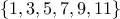. The same set may be represented by a tree in a
number of different ways. The only thing we require for a valid
representation is that all elements in the left subtree be smaller
than the node entry and that all elements in the right subtree be
larger.

|
Figure 2.
16 Various binary trees that represent the set .
|
The advantage of the tree representation is this: Suppose we want to
check whether a number
is contained in a set. We begin by
comparing
with the entry in the top node. If

is less than
this, we know that we need only search the left subtree; if
is
greater, we need only search the right subtree. Now, if the tree is
“balanced,” each of these subtrees will be about half the size of
the original. Thus, in one step we have reduced the problem of
searching a tree of size
to searching a tree of size
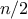. Since
the size of the tree is halved at each step, we should expect that the
number of steps needed to search a tree of size
grows as
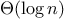.
9 For large sets, this will
be a significant speedup over the previous representations.
We can represent trees by using lists. Each node will be a list of
three items: the entry at the node, the left subtree, and the right
subtree. A left or a right subtree of the empty list will indicate
that there is no subtree connected there. We can describe this
representation by the following
functions:
10
function entry(tree) {
return head(tree);
}
function left_branch(tree) {
return head(tail(tree);
}
function right_branch(tree) {
return head(tail(tail(tree)));
}
function make_tree(entry,left,right) {
return list(entry,left,right);
}
entry(
left_branch(
right_branch(
make_tree(
10,
[],
make_tree(
30,
make_tree(20,[],[]),
[])))))
Now we can write the
is_element_of_set
function
using the strategy
described above:
function is_element_of_set(x,set) {
if (is_empty_list(set))
return false;
else if (x === entry(set))
return true;
else if (x < entry(set))
return is_element_of_set(x,left_branch(set));
else if (x > entry(set))
return is_element_of_set(x,right_branch(set));
Adjoining an item to a set is implemented similarly and also requires
steps. To adjoin an item
x, we compare
x with
the node entry to determine whether
x should be added to the
right or to the left branch, and having adjoined
x to the
appropriate branch we piece this newly constructed branch together
with the original entry and the other branch. If
x is equal to
the entry, we just return the node. If we are asked to adjoin
x to an empty tree, we generate a tree that has
x as the
entry and empty right and left branches. Here is the
function:
function adjoin_set(x,set) {
if (is_empty_list(set))
return make_tree(x,[],[]);
else if (x === entry(set))
return set;
else if (x < entry(set))
return make_tree(entry(set),
adjoin_set(x,left_branch(set)),
right_branch(set));
else if (x > entry(set))
return make_tree(entry(set),
left_branch(set),
adjoin_set(x,right_branch(set)));
}
The above claim that searching the tree can be performed in a logarithmic
number of steps
rests on the assumption that the tree is
“balanced,” i.e., that the
left and the right subtree of every tree have approximately the same
number of elements, so that each subtree contains about half the
elements of its parent. But how can we be certain that the trees we
construct will be balanced? Even if we start with a balanced tree,
adding elements with
adjoin_set may produce an unbalanced
result. Since the position of a newly adjoined element depends on how
the element compares with the items already in the set, we can expect
that if we add elements “randomly” the tree will tend to be balanced
on the average. But this is not a guarantee. For example, if we
start with an empty set and adjoin the numbers 1 through 7 in sequence
we end up with the highly unbalanced tree shown in
figure
2.17. In this tree all the left subtrees
are empty, so it has no advantage over a simple ordered list. One
way to solve this problem is to define an operation that transforms an
arbitrary tree into a balanced tree with the same elements. Then we
can perform this transformation after every few
adjoin_set
operations to keep our set in balance. There are also other ways to
solve this problem, most of which involve designing new data
structures for which searching and insertion both can be done in
steps.
11

|
Figure 2.
17 Unbalanced tree produced by adjoining 1 through 7 in sequence.
|
Exercise 2.66.
Each of the following two
functions
converts a
binary tree to a list.
function tree_to_list_1(tree) {
if (is_empty_list(tree))
return [];
else
return append(tree_to_list_1(left_branch(tree)),
pair(entry(tree),
tree_to_list_1(right_branch(tree))));
}
function tree_to_list_2(tree) {
function copy_to_list(tree,result_list) {
if (is_empty_list(tree))
return result_list;
else
return copy_to_list(left_branch(tree),
pair(entry(tree),
copy_to_list(right_branch(tree),
result_list)));
}
return copy_to_list(tree,[]);
}
-
Do the two
functions
produce the same result for every tree? If
not, how do the results differ? What lists do the two
functions
produce for the trees in figure 2.16?
-
Do the two
functions
have the same order of growth in the number
of steps required to convert a balanced tree with elements to a list?
If not, which one grows more slowly?
Exercise 2.67.
The following
function
list_to_tree converts an ordered list to a
balanced binary tree. The helper
function
partial_tree takes
as arguments an integer
and list of at least
elements and
constructs a balanced tree containing the first
elements of the
list. The result returned by
partial_tree is a pair (formed
with
pair) whose
head is the constructed tree and whose
tail is the list of elements not included in the tree.
function list_to_tree(elements) {
return head(partial_tree(elements,length(elements)));
}
function partial_tree(elts,n) {
if (n === 0)
return pair([],elts);
else {
var left_size = quotient(n - 1,2);
var left_result = partial_tree(elts,left_size);
var left_tree = head(left_result);
var non_left_elts = tail(left_result);
var right_size = n - (left_size + 1);
var this_entry = head(non_left_elts);
var right_result = partial_tree(tail(non_left_elts),
right_size);
var right_tree = head(right_result);
var remaining_elts = tail(right_result);
return pair(make_tree(this_entry,left_tree,right_tree),
remaining_elts);
-
Write a short paragraph explaining as clearly as you can how partial_tree works. Draw the tree produced by list_to_tree for
the list [1,[3,[5,[7,[9,[11,[]]]]]]].
-
What is the order of growth in the number of steps required by list_to_tree to convert a list of elements?
Exercise 2.68.
Use the results of exercises
2.66 and
2.67 to give
implementations of
union_set and
intersection_set for sets implemented as
(balanced) binary trees.
12
Sets and information retrieval
We have examined options for using lists to represent sets and have
seen how the choice of representation for a data object can have a
large impact on the performance of the programs that use the data.
Another reason for concentrating on sets is that the techniques
discussed here appear again and again in applications involving
information retrieval.
Consider a data base containing a large number of individual records,
such as the personnel files for a company or the transactions in an
accounting system. A typical data-management system spends a large
amount of time accessing or modifying the data in the records and
therefore requires an efficient method for accessing records. This is
done by identifying a part of each record to serve as an identifying
key. A key can be anything that uniquely identifies the
record. For a personnel file, it might be an employee’s ID number.
For an accounting system, it might be a transaction number. Whatever
the key is, when we define the record as a data structure we should
include a
key selector
function
that retrieves the key
associated with a given record.
Now we represent the data base as a set of records. To locate the
record with a given key we use a
function
lookup, which takes
as arguments a key and a data base and which returns the record that
has that key, or false if there is no such record. The function
lookup
is implemented in almost the same way as
is_element_of_set. For
example, if the set of records is implemented as an unordered list, we
could use
function lookup(given_key,set_of_records) {
if (is_empty_list(set_of_records))
return false;
else if (is_equal(given_key,key(head(set_of_records))))
return head(set_of_records);
else
return lookup(given_key,tail(set_of_records));
}
Of course, there are better ways to represent large sets than as
unordered lists. Information-retrieval systems in which records have
to be “randomly accessed” are typically implemented by a tree-based
method, such as the binary-tree representation discussed previously.
In designing such a system the methodology of data abstraction
can be a great help. The designer can create an initial
implementation using a simple, straightforward representation such as
unordered lists. This will be unsuitable for the eventual system, but
it can be useful in providing a “quick and dirty” data base with
which to test the rest of the system. Later on, the data
representation can be modified to be more sophisticated. If the data
base is accessed in terms of abstract selectors and constructors, this
change in representation will not require any changes to the rest of
the system.
Exercise 2.69.
Implement the
lookup
function
for the case
where the set of records is structured as a binary tree, ordered by
the numerical values of the keys.
This section provides practice in the use of list structure and data
abstraction to manipulate sets and trees. The application is to
methods for representing data as sequences of ones and zeros (bits).
For example, the
ASCII standard code used to represent text in
computers encodes each
character as a sequence of seven bits. Using
seven bits allows us to distinguish
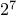, or 128, possible different
characters. In general, if we want to distinguish
different
symbols, we will need to use
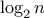 bits per symbol. If all our
messages are made up of the eight symbols A, B, C, D, E, F, G, and H,
we can choose a code with three bits per character, for example
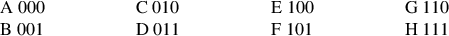
With this code, the message
BACADAEAFABBAAAGAH
is encoded as the string of 54 bits
001000010000011000100000101000001001000000000110000111
Codes such as ASCII and the A-through-H code above are known as
fixed-length codes, because they represent each symbol in the message
with the same number of bits. It is sometimes advantageous to use
variable-length codes, in which different symbols may be
represented by different numbers of bits. For example,
Morse code
does not use the same number of dots and dashes for each letter of the
alphabet. In particular, E, the most frequent letter, is represented
by a single dot. In general, if our messages are such that some
symbols appear very frequently and some very rarely, we can encode
data more efficiently (i.e., using fewer bits per message) if we
assign shorter codes to the frequent symbols. Consider the following
alternative code for the letters A through H:
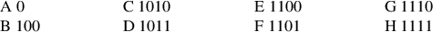
With this code, the same message as above is encoded as the string
100010100101101100011010100100000111001111
This string contains 42 bits, so it saves more than 20% in space in
comparison with the fixed-length code shown above.
One of the difficulties of using a variable-length code is knowing
when you have reached the end of a symbol in reading a sequence of
zeros and ones. Morse code solves this problem by using a special
separator code (in this case, a pause) after the sequence of
dots and dashes for each letter. Another solution is to design the
code in such a way that no complete code for any symbol is the
beginning (or prefix) of the code for another symbol. Such a
code is called a
prefix code. In the example above, A is
encoded by 0 and B is encoded by 100, so no other symbol can have a
code that begins with 0 or with 100.
In general, we can attain significant savings if we use
variable-length prefix codes that take advantage of the relative
frequencies of the symbols in the messages to be encoded. One
particular scheme for doing this is called the Huffman encoding
method, after its discoverer,
David Huffman. A Huffman code can be
represented as a
binary tree whose leaves are the symbols that are
encoded. At each non-leaf node of the tree there is a set containing
all the symbols in the leaves that lie below the node. In addition,
each symbol at a leaf is assigned a weight (which is its
relative frequency), and each non-leaf
node contains a weight that is the sum of all the weights of the
leaves lying below it. The weights are not used in the encoding or
the decoding process. We will see below how they are used to help
construct the tree.

|
Figure 2.
18 A Huffman encoding tree.
|
Figure
2.18 shows the Huffman tree for the A-through-H
code given above. The weights at the leaves
indicate that the tree was designed for messages in which A appears
with relative frequency 8, B with relative frequency 3, and the
other letters each with relative frequency 1.
Given a Huffman tree, we can find the encoding of any symbol by
starting at the root and moving down until we reach the leaf that
holds the symbol. Each time we move down a left branch we add a 0 to
the code, and each time we move down a right branch we add a 1. (We
decide which branch to follow by testing to see which branch either is
the leaf node for the symbol or contains the symbol in its set.) For
example, starting from the root of the tree in
figure
2.18, we arrive at the leaf for D by following a
right branch, then a left branch, then a right branch, then a right
branch; hence, the code for D is 1011.
To decode a bit sequence using a Huffman tree, we begin at the root
and use the successive zeros and ones of the bit sequence to determine
whether to move down the left or the right branch. Each time we come
to a leaf, we have generated a new symbol in the message, at which
point we start over from the root of the tree to find the next symbol.
For example, suppose we are given the tree above and the sequence
10001010. Starting at the root, we move down the right branch, (since
the first bit of the string is 1), then down the left branch (since
the second bit is 0), then down the left branch (since the third bit
is also 0). This brings us to the leaf for B, so the first symbol of
the decoded message is B. Now we start again at the root, and we make
a left move because the next bit in the string is 0. This brings us
to the leaf for A. Then we start again at the root with the rest of
the string 1010, so we move right, left, right, left and reach C.
Thus, the entire message is BAC.
Generating Huffman trees
Given an “alphabet” of symbols and their relative frequencies, how
do we construct the “best” code? (In other words, which tree will
encode messages with the fewest bits?) Huffman gave an algorithm for
doing this and showed that the resulting code is indeed the best
variable-length code for messages where the relative frequency of the
symbols matches the frequencies with which the code was constructed.
We will not prove this optimality of Huffman codes here, but we will
show how Huffman trees are constructed.
13
The algorithm for generating a Huffman tree is very simple. The idea
is to arrange the tree so that the symbols with the lowest frequency
appear farthest away from the root. Begin with the set of leaf nodes,
containing symbols and their frequencies, as determined by the initial data
from which the code is to be constructed. Now find two leaves with
the lowest weights and merge them to produce a node that has these
two nodes as its left and right branches. The weight of the new node
is the sum of the two weights. Remove the two leaves from the
original set and replace them by this new node. Now continue this
process. At each step, merge two nodes with the smallest weights,
removing them from the set and replacing them with a node that has
these two as its left and right branches. The process stops when
there is only one node left, which is the root of the entire tree.
Here is how the Huffman tree of figure
2.18 was generated:
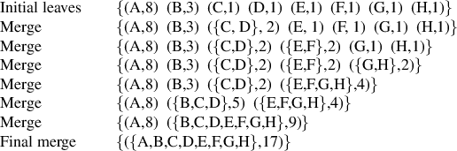
The algorithm does not always specify a unique tree, because there may
not be unique smallest-weight nodes at each step. Also, the choice of
the order in which the two nodes are merged (i.e., which will be the
right branch and which will be the left branch) is arbitrary.
Representing Huffman trees
In the exercises below we will work with a system that uses
Huffman trees to encode and decode messages and generates Huffman
trees according to the algorithm outlined above. We will begin by
discussing how trees are represented.
Leaves of the tree are represented by a list consisting of the
symbol
leaf, the symbol at the leaf, and the weight:
function make_leaf(symbol,weight) {
return list("leaf",symbol,weight);
}
function is_leaf(object) {
return head(object) === "leaf";
}
function weight_leaf(x) {
return head(tail(tail(x)));
}
A general tree will be a list of a left branch, a right branch, a set
of symbols, and a weight. The set of symbols will be simply a list of
the symbols, rather than some more sophisticated set representation.
When we make a tree by merging two nodes, we obtain the weight of the
tree as the sum of the weights of the nodes, and the set of symbols as
the union of the sets of symbols for the nodes. Since our symbol sets are
represented as lists, we can form the union by using the
append
function
we defined in section
2.2.1:
function make_code_tree(left,right) {
return list(left,
append(symbols(left),symbols(right)),
weight(left) + weight(right));
}
If we make a tree in this way, we have the following selectors:
function left_branch(tree) {
return head(tree);
}
function right_branch(tree) {
return head(tail(tree));
}
function symbols(tree) {
if (is_leaf(tree))
return list(symbol_leaf(tree));
else
return head(tail(tail(tree)));
}
function weight(tree) {
if (is_leaf(tree))
return weight_leaf(tree);
else
head(tail(tail(tail(tree))));
}
The
functions
symbols and
weight must do something
slightly different depending on whether they are called with a leaf or
a general tree. These are simple examples of
generic
functions (functions
that can handle more than one kind of data),
which we will have much more to say about in
sections
2.4 and
2.5.
The decoding
function
The following
function
implements the decoding algorithm.
It takes as arguments a list of zeros and ones, together with
a Huffman tree.
function decode(bits,tree) {
function decode_1(bits,current_branch) {
if (is_empty_list(bits))
return [];
else
var next_branch = choose_branch(head(bits),
current_branch);
if (is_leaf(next_branch))
return pair(symbol_leaf(next_branch),
decode_1(tail(bits),tree));
else
return decode_1(tail(bits),next_branch);
}
return decode_1(bits,tree);
}
function choose_branch(bit,branch) {
if (bit === 0)
return left_branch(branch);
else if (bit === 1)
return right_branch(branch);
else
return error("bad bit -- choose_branch",bit);
}
The
function
decode_1 takes two arguments: the list of remaining bits
and the current position in the tree. It keeps moving
“down” the tree, choosing a left or a right branch according to
whether the next bit in the list is a zero or a one. (This is done
with the
function
choose_branch.) When it reaches a leaf, it
returns the symbol at that leaf as the next symbol in the message by
pairing it onto the result of decoding
the rest of the message, starting at the root of the tree.
Note the error check in the final clause of choose_branch, which
complains if the
function
finds something other than a zero or a one in the
input data.
Sets of weighted elements
In our representation of trees, each non-leaf node contains a set of
symbols, which we have represented as a simple list. However, the
tree-generating algorithm discussed above requires that we also work
with sets of leaves and trees, successively merging the two smallest
items. Since we will be required to repeatedly find the smallest item
in a set, it is convenient to use an ordered representation for this
kind of set.
We will represent a set of leaves and trees as a list of elements,
arranged in increasing order of weight. The following
adjoin-set
function
for constructing sets is similar to the one
described in exercise
2.64; however, items are compared
by their weights, and the element being added to the set is
never already in it.
function adjoin_set(x,set) {
if (is_empty_list(set))
return list(x);
else if (weight(x) < weight(head(set)))
return pair(x,set);
else
return pair(head(set),
adjoin_set(x,tail(set)));
}
The following
function
takes a list of
symbol-frequency pairs such as
[["A",[4,[]]],[["B",[2,[]]],[["C",[1,[]]],[["D",[1,[]]]]]]] and
constructs an initial ordered set of leaves, ready to be merged
according to the Huffman algorithm:
function make_leaf_set(pairs) {
if (is_empty_list(pairs))
return [];
else {
var first_pair = head(pairs);
return adjoin_set(make_leaf(head(first_pair), // symbol
head(tail(first_pair))), // frequency
make_leaf_set(tail(pairs)));
}
}
Exercise 2.70.
Define an encoding tree and a sample message:
var sample_tree =
make_code_tree(make_leaf("A",4),
make_code_tree(make_leaf("B",2),
make_code_tree(make_leaf("D",1),
make_leaf("C",1))));
Use the
decode
function
to decode the
message, and give the result.
Exercise 2.71.
The
encode
function
takes as arguments a message and a tree and
produces the list of bits that gives the encoded message.
function encode(message,tree) {
if (is_empty_list(message))
return [];
else
return append(encode_symbol(head(message),tree),
encode_symbol(tail(message),tree));
}
Write the function
encode_symbol
that returns the list of bits that encodes a given symbol according to a given tree.
You should design
encode_symbol so that it signals an
error if the symbol is not in the tree at all. Test your
function
by
encoding the result you obtained in exercise
2.70 with
the sample tree and seeing whether it is the same as the original
sample message.
Exercise 2.72.
The following
function
takes as its argument a list of
symbol-frequency pairs (where no symbol appears in more than one pair)
and generates a Huffman encoding tree according to the Huffman
algorithm.
function generate_huffman_tree(pairs) {
return successive_merge(make_leaf_set(pairs));
}
The function
make_leaf_set
that transforms the
list of pairs into an ordered set of leaves is given above.
Write the function
successive_merge
using
make_code_tree to
successively merge the smallest-weight elements of the set until there
is only one element left, which is the desired Huffman tree.
(This
function
is slightly tricky, but not really complicated. If you find
yourself designing a complex
function, then you are almost certainly
doing something wrong. You can take significant advantage of the fact
that we are using an ordered set representation.)
Exercise 2.73.
The following eight-symbol alphabet with associated relative
frequencies was designed to efficiently encode the lyrics of 1950s
rock songs. (Note that the “symbols” of an “alphabet” need not be
individual letters.)
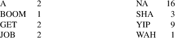
Use
generate_huffman_tree (exercise
2.72)
to generate a corresponding Huffman tree, and use
encode (exercise
2.71)
to encode the following message:
Get a job
Sha na na na na na na na na
Get a job
Sha na na na na na na na na
Wah yip yip yip yip yip yip yip yip yip
Sha boom
How many bits are required for the encoding? What is the smallest
number of bits that would be needed to encode this song if we
used a fixed-length code for the eight-symbol alphabet?
Exercise 2.74.
Suppose we have a Huffman tree for an alphabet of
symbols, and
that the relative frequencies of the symbols are 1, 2, 4, …,
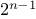. Sketch the tree for
=5; for
=10. In such a tree
(for general
) how may bits are required to encode the most
frequent symbol? the least frequent symbol?
Exercise 2.75.
Consider the encoding
function
that you designed in
exercise
2.71. What is the order of growth in the
number of steps needed to encode a symbol? Be sure to include the
number of steps needed to search the symbol list at each node
encountered. To answer this question in general is difficult.
Consider the special case where the relative frequencies of the
symbols are as described in exercise
2.74, and give
the order of growth (as a function of
) of the number of steps
needed to encode the most frequent and least frequent symbols in the
alphabet.